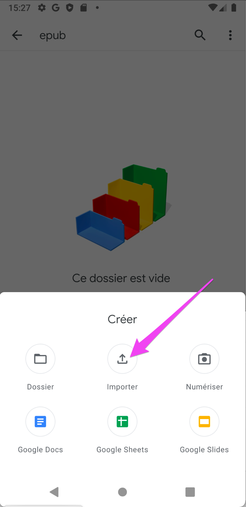
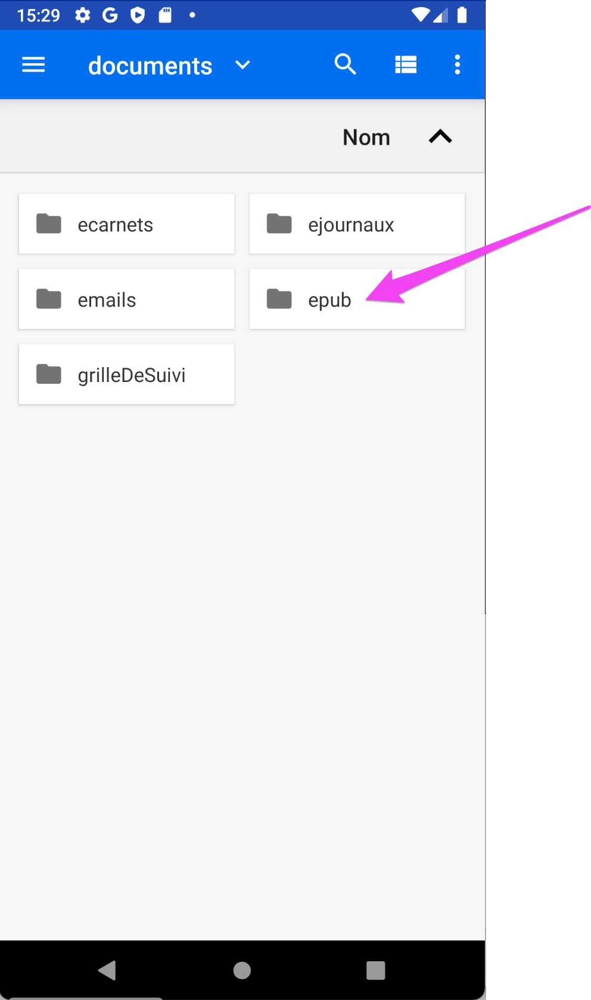
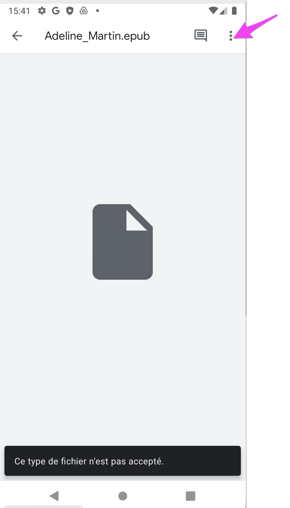
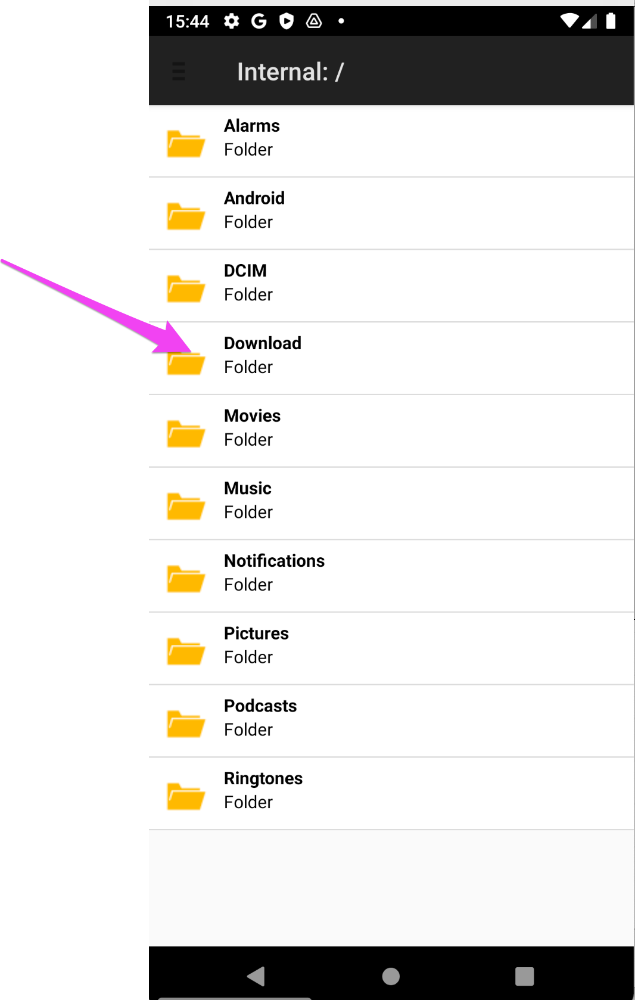
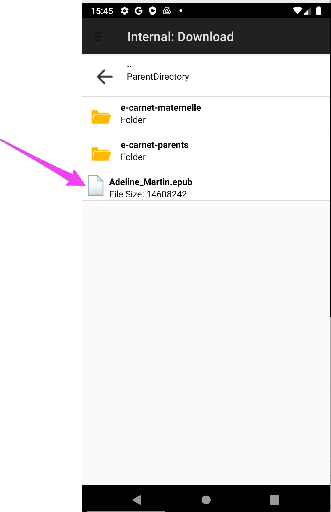
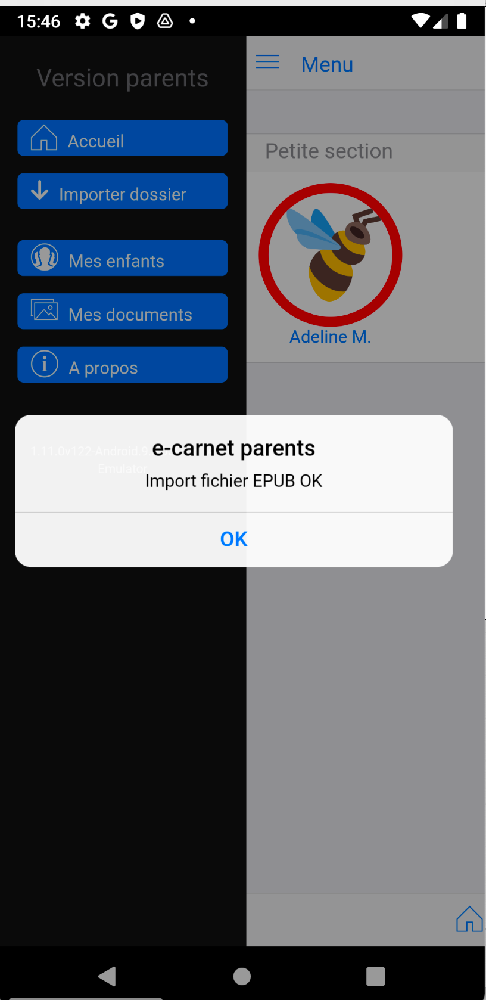
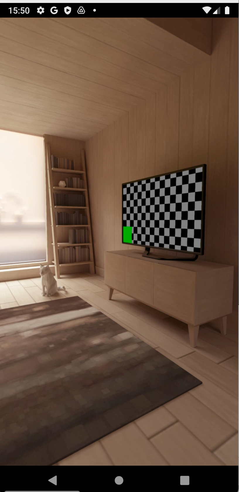

application pour professeur du cycle maternelle
Version 1.9.16v117 du 14 mars 2021, édition du 20 juin 2021
Le e-carnet maternelle est une application gratuite pour les enseignants et les élèves de cycle 1.
Elle permet de simplifier et automatiser la production des carnets de suivi des apprentissages destinés aux parents.
Elle permet de saisir et stocker instantanément tous types de documents (image, audio, vidéo, texte) pour chaque élève de la classe.
Ces traces (témoignages des apprentissages) sont associés aux attendus et observables établis par le Ministère de l’Éducation Nationale.
Un commentaire de l’élève ainsi qu’un commentaire de l’enseignant peuvent être ajoutés.
Les carnets de suivi sont générés automatiquement à la demande et peuvent être envoyés par mail aux parents. Ils peuvent être transmis par d’autres moyens. Voir Mode de transmission du e-carnet.
Ce n’est pas un carnet de compétences, on prend l’élève au niveau qui est le sien, il est la référence, et on constate avec lui ses progrès au cours du temps. Conformément aux textes officiels, il n’y a pas de code de “notation”.
Le logiciel est le votre, il évolue au gré de vos remontées et suggestions. N’hésitez pas à nous en faire part. En moyenne, une nouvelle version est publiée tous les mois.
Pour plus d’informations, voir le site web e-carnet-maternelle.
Quelques exemples de contenus produit par le logiciel :
Le logiciel génère un fichier au format html adapté à sa transmission par email aux parents.
Ce fichier a l’avantage d’être “dynamique”. Le clic sur des boutons permet de masquer ou d’afficher des parties entières. Ci-après la version avec les parties explicatives masquées.
Le même document, mais pour lequel les parties explicatives à vocation pédagogique n’ont pas été masquées :


Un peu d’histoire pour comprendre…
Le logiciel e-carnet maternelle est le résultat de la rencontre d’un enseignant de La Réunion et d’un ingénieur travaillant dans la région parisienne.
Professeur des écoles Maître Formateur (PEMF) en maternelle au moment de l’apparition du carnet de suivi des apprentissages, Rémi a été confronté à la difficulté de le concrétiser en version papier.
Passé dans la foulée conseiller pédagogique, en circonscription, pour le numérique, Rémi a réfléchi à une solution et fait appel à un ami ingénieur passionné d’informatique travaillant par ailleurs pour une entreprise multinationale dans le domaine des Télécom (Thierry).
Ensemble, à distance, sur notre temps libre, nous avons donc conçu le e-carnet-maternelle qui évolue continuellement en fonction des retours de terrain et de nos idées.
C’est une fabuleuse expérience qui nous passionne.
Contrairement à d’autres éditeurs, nous ne vivons pas de cela.
L’application fonctionne sans ressources externes : pas de serveurs sur Internet et pas d’usage de logiciels payants (que de l’open source). Nous n’avons donc pas de frais fixes.
Nous ne comptons pas nos heures !!!
C’est pour cela que, dès le départ, nous avions prévu que cette version serait et resterait gratuite.
Le logiciel e-carnet-maternelle tel que nous le connaissons restera gratuit, sans publicité et sans revente de données quelles qu’elles soient.
Vos multiples retours positifs et encouragements sont notre carburant !
L’application e-carnet-de-maternelle s’appuye et met en oeuvre le référentiel décrit dans ce document Eduscol.
Référence éducation nationale : Le carnet de suivi des apprentissages en maternelle

Nouveauté depuis la version 1.8 : il est maintenant possible de changer le référentiel par défaut. Les principales situations qui peuvent le nécessiter sont :
La mise en oeuvre de cette adatation est décrite dans le chapitre Catalogue observables.
NB : un usage récent du e-carnet maternelle a permis à une école internationale de produire plusieurs centaines de e-carnets personnalisés adaptés à un parcours trilingue : Français, Anglais, Arabe.
Voir les tutos pour plus de précisions sur la façon de procéder.
Il faut éviter de “sauter des versions”.
Par conséquent il est fortement recommander de mettre l’application à jour très régulièrement en la connectant à internet régulièrement et de vérifier si une nouvelle version est disponible.
Vous pouvez aussi activer la fonction Android “Mettre à jour automatiquement”
Comme il vaut toujours mieux prévenir que guérir, l’utilisation de l’une ou plusieurs des techniques ci-après est fortement recommandée.
En priorité, si elle existe, mettez en oeuvre la recommandation de votre établissement ou de votre fournisseur de tablette concernant leur sauvegarde.
A défaut, vous pouvez utiliser une ou plusieurs des techniques suivantes.
Si vous en avez la possibilité, c’est une des techniques les plus simple et la plus complète.
Elle permet de sauvegarder la totalité de vos données y compris celles de vos applications.
Cet écran apparaît lorsque vous configurez un compte de messagerie Google :
Vous pouvez à tout instant provoquer la production d’un fichier (archive zip) qui contient toutes les données et media utilisés par votre application.

Cette fonctionnalité est décrite dans le chapitre Réglages, commandes.
Conseil : n’attendez pas le dernier moment pour produire vos e-carnets !
Vous pouvez à tout instant provoquer la production de fichiers html ou epub qui contiennent le reflet des apprentissages de chaque élève en utilisant les boutons de raccourcis figurant dans la page contenant la liste des élèves :

NB : pour accéder à cette page, cf l’icône en haut à droite :
Retrouvez ensuite les fichiers générés avec votre explorateur de fichiers, dans votre répertoire “Téléchargement” et “e-carnet-maternelle”.

NB : cette copie d’écran peut être différente selon les versions Android.

NB : le nombre qui figure dans le nom de fichier est la date de production du fichier. Cette date ne figureara pas dans le nom de fichier qui sera inséré dans l’email pour les parents.

Malgré tout le soin apporté au développment de cette application, il peut se produire des situations imprévues …
Lorsque cela arrive, pas de panique … A ce jour la plupart des situations que vous nous avez remonté a été résolue dans un délai pouvant aller de 24 à 48h.
Mais pour cela quelques consignes qui permettront d’accélérer l’identification et la correction ou le contournement du problème :
A savoir, vous pouvez aussi envoyer ce rapport d’erreur directement avec votre logiciel de messagerie. Le fichier à joindre est “journal.html” situé ici :
Coordonnées du soutien : support@tr-esolutions.com
Cette application a la particularité de pouvoir fonctionner aujourd’hui sans connection internet. C’est une demande de certains(es) d’entre-vous qui ont des classes non desservies en wifi ou en acces internet.
Par conséquent, elle ne stocke aucune donnée liée aux enfants ou à la classe sur un serveur externe.
Cela signifie que toutes les données sont stockées sur la tablette et que ce stockage est donc limité à sa capacité mémoire et à la place laissée par d’autres documents ou applications.
Un usage intensif pouvant aller de type 30 photos par élève pour une classe de 25 élèves, soit 750 photos est possible sur la plutpart des tablettes.
Neanmoins certaines tablettes anciennes (encore sous Android 5 ou 5) peuvent commencer à “planter” des lors que le nombre de photo par élève augmente.
Pour limiter ce risque de plantage à la génération des e-carnets, un mécanisme automatique de réduction de la qualité des images se déclenche au dela d’un certain nombre de photo par élève (réglable dans les réglages, )

Pour limiter le volume de stockage lié au nombre de photo, il est possible de limiter leur taille et donc de ne pas conserver la taille initiale des photos prises par la tablette.
Ces réglages sont aussi possible depuis l’écran ci-dessus.
Des explications détaillées sont fournies dans le chapitre Réglages
Bien que l’application e-carnet soit pleinement fonctionnelle sur un smarthphone android, il est recommandé d’utiliser une tablette pour laquelle les écrans ont été initialement conçus.
L’adaptation aux smartphones est prévue, elle se fera progressivement.
Les photos prises par l’application sont stockées dans le répertoire “Pictures” :

Ces photos ont un nom de fichier commençant par ECM_ :

Retrouvez la dernière version sur le site web de l’application : e-carnet-maternelle.jimdofree.com
Découvrez les tutoriels !
Consignes de téléchargement de cette documentation et de l’application :

Après l’installation, retrouvez l’application quelque part par ici …

Android 7.1.1 :

Android 9 :

Sur Android Play store : https://play.google.com/store/apps/details?id=org.tre.eportfolio&gl=FR
NB : Bugs identifiés restant à corriger :
Liste des permissions nécessaires au fonctionnement de l’application Android :
NB : Bugs identifiés restant à corriger :
Prochaine version :
Mise à jour de cette documentation : ajout de 47 “tutos” video. Perfectibles … mais disponibles !
Corrections de bugs.
Remise en service export format epub pour sauvegarde ou échange dossier élève entre tablettes et versions Windows, Mac.
Compatible avec échanges bi-directionnels entre version Android, Windows, MacOS via transfert de fichier.
NB : Bugs récemments identifiés qui seront pris en compte dans la prochaine version, courant décembre :
NB : les nouvelles versions Windows, MacOs et Linux seront disponibles mi-décembre 2020. Elles auront les particularités suivantes :
Ajout du bouton « importer photo » dans le volet de gauche
Prise en compte des avatars personnalisés dans la sauvegarde/restauration
Optimisation de la gestion du journal
Correction bug de la fonction « tableau de bord »
Mise à jour fichier des remplacements pour la personnalisation du e-carnet.
Ajout d’un bouton “mise à jour fichier remplacements”
Amélioration de la fonction de personnalisation des e-carnets. Exemples : suppression bloc signature direction, suppression mode 2 colonnes dans les appréciations, augmentation taille police, remplacement de libellés, …
Amélioration de la fonction de gestion des ateliers : désactivation par défaut en mode enseignant.
Mise à jour parties Aide, A propos.
Correction d’un bug.
Spécial travail à distance : Ajout d’une fonction permettant d’envoyer une consigne à tous les parents.
Ajout possibilité de personnaliser la mise en forme et les contenus des e-carnets et e-journaux produits.
Diminution des causes de plantage.
Vous pouvez continuer d’utiliser e-carnet à distance en incorporant des photos que les parents pourraient vous envoyer.
Possibilité de pré sélectionner jusqu’à 8 observables par défaut, 1 par “atelier” pour une affectation automatique lors de la capture par les élèves.
Possibilité de modifier les libellés des observables.
Possibilité d’ajouter des “étiquettes” (tags) à chaque observable pour facilité leur sélection dans la grille.
Corrections de bugs et optimisations diverses.
Em mode élève, affectation des photos à un observable par défaut. Evite d’avoir a affecter les photos à posteriori. Sélection à partir de la grille de suivi. Le clic sur le bouton retour ne fait plus quitter prématurément. Optimisations multiples pour diminuer le risque de plantage lorsque le nombre de photos devient important (> 500).
Optimisation et correction bug d’affichage de la grille de suivi.
Optimisation de la gestion mémoire pour diminuer les risques de plantage dans le cas de grand nombre de photos. D’autres optimisations sont en cours de préparation. Correction de bugs.
Mise à jour du lien vers la documentation dans la page Aide.
La lecture des vidéos est de nouveau opérationnelle (correction bug).
La grille de suivi est maintenant affichée pour les élèves d’une même section.
Les fichiers e-carnet peuvent être produits directement depuis la page contenant la liste des élèves, affichée en mode liste (et pas mosaïque). Ils s’enregistrent directement sur la tablette.
Nouveau document possible : e-journal. Il reproduit le contenu qui apparaît dans le blog élève. Similaire au e-carnet mais les observables sont présentés par ordre chronologique, quel que soit le référentiel utilisé. Permet d’avoir des observables décrits selon plusieurs référentiels (exemple : anglais/français). Email modifié en conséquence : e-journal au lieu de e-carnet. Personnalisation dans les réglages.
Ce document e-journal peut être multi lingue. Il peut rassembler des observables rédigés en plusieurs langues (cas des classes qui enseignent plusieurs langues).
Changement du sélecteur de photo pour l’avatar élève. Il est maintenant possible d’aller choisir une photo n’importe où sur la tablette.
Fonction de nettoyage des documents pour lesquels les medias ont été supprimés.
Fonction d’import du fichier de sauvegarde des élèves.
Sauvegarde automatique des réglages à chaque démarrage de l’application.
Amélioration gestion sauvegarde/restauration des données de l’application.
Correction bug de la fonction exporter liste des élèves au format xlsx depuis la page liste des élèves.
Ajouter message d’alerte si le filtre de date dans le e-carnet conduit à 0 media.
Le catalogue de référence est maintenant personnalisable grâce à une application windows et MacOs (voir notre site web). Le fichier résultant s’importe dans la tablette depuis “réglages/Gestion observables”.
NB : le blog de l’élève est MULTI catalogue : quels que soient les catalogues successivement utilisés, les medias conservent la mémoire du catalogue ayant servi a affecter l’observable. le e-carnet, lui est MONO catalogue : il ne liste QUE les medias du catalogue courant
Cette possibilité permet la prise en compte des référentiels francophones différents (ASH, Montessori, Belge, …) et des versions en d’autres langues (Anglais, Arabe, Occitan, Catalan, …). Elle permet aussi de déployer une même version de référentiel au sein d’un même établissement.
Remise en service du contrôle de version et de l’inscription à la newsletter. Les tutoriels sont redevenus accessibles depuis l’application.
Correction du bug Supprimer document.
Optimisation gestion taille des images, agrandissement dans le blog.
Grille de suivi : ajout sélecteur de media.
Bouton repositionnement par défaut de la fenêtre journal dans réglages/journal.
Correction bug lié à utilisation d’une période de sélection.
Correction bug grille de suivi qui ne s’affichait plus
Réactivation de la synthèse vocale.
Correction bug lié à la rotation des photos dans le e-carnet et les fichiers epub.
Cette nouvelle version a fait l’objet de nombreuses optimisations techniques visant à augmenter les performances en situation d’un grand nombre de medias (plusieurs centaines de photos par exemple).
Elle diminue aussi les cas de plantage.
Information importante pour les utilisateurs actuels : lors du prochain lancement, une opération technique va être réalisée.
Cette opération qui n’aura lieu qu’une seule fois peut prendre du temps (jusqu’à plusieurs dizaines de minutes selon le nombre de photos). Il est important d’attendre la fin du processus.
Nouvelles fonctionnalités :
Ajout nouveau pad pour signature des parents, directement depuis le e-carnet généré, dans la case prévue à cet effet. La signature des parents est uniquement visible dans le e-carnet qu’ils auront signé depuis la tablette de l’enseignant.
Ajout sélection d’une période pour ne conserver dans le e-carnets que les observables d’une période. Menu “réglages”, “Parametres e-carnet”.
Compatible avec un grand nombre de medias (testé 700, mais pourra dépasser)
Export de la grille de suivi sous forme de fichier Excel.
Export de tout le contenu (base de données et medias : photos, videos, audio) dans un dossier (fichier SAUVEGARDE_ECM.zip)
Import du fichier de sauvegarde dans une autre tablette si besoin (transfert ou sauvegarde). Ne pas changer le nom du fichier : SAUVEGARDE_ECM.zip
Affichage d’une fenetre de ‘logs’ (journal) qui montre ce qui se passe, affiche les éventuelles erreurs et produit un fichier journal qui peut être facilement consultable et envoyé par email pour support. L’affichage de ce popup journal est gérable dans Réglages/Journal.
Il y a principalement 2 modes d’utilisation de l’application.
L’application est prévue pour être utilisée principalement par le professeur mais elle peut être utilisé aussi par un élève.
Dans ce cas les fonctionnalités sont adaptées. L’élève a accès uniquement aux fonctions de capture d’image de vidéo, de sons et de texte.
La taille des icônes et des textes dans la barre supérieure de menu est spécialement aggrandie pour une simplification de l’accès par les élèves.
C’est le mode par défaut de l’application. Il est décrit ci-après.
Au lancement de l’application, un écran permet de sélectionner la fiche élève depuis laquelle l’enregistrement des preuves :
4 icones de capture ont été spécialement agrandies pour être adaptées aux capacités motrices des élèves de maternelle.
L’élève va pouvoir réaliser les actions suivantes :
La sélection de l’atelier s’effectue en touchant la ligne d’entête.

Pour sélectionner l’atelier sur lesquels le groupe d’élèves munis de la tablette travaille, touche la zone bleue contenant l’atelier correspondant :

Le numéro de l’atelier et l’observable associé s’affichent maintenant dans la ligne d’entête.
A partir de cet instant, toutes les traces capturées par le groupe d’élève vont être affectées automatique à cet observable rappelé dans l’entête.
Des lors que l’élève a commencé par choisir son avatar avant de caputurer une photo, sa trace est automatiquement renseignée et vous n’aurez plus rien à faire, excepté revoir ou affecter un commentaire.

NB : au retour en mode enseignant, l’atelier courant est désélectionné. Aucun atelier par défaut n’est alors actif. Ceci pour éviter l’affectation automatique d’un observable à toute nouvelle capture de trace réalisée en mode enseignant. Il est néanmoins possible de re-sélectionner un atelier par défaut. Il sera ajouté à tout observable que vous pourriez choisir en complément.

Une fenêtre de prise de vue s’affiche et l’élève n’a plus qu’à appuyer sur le déclencheur.


Saisie d’un commentaire associé à la photo : 2 possibilités.
Avec le clavier, Avec une reconnaissance vocale :

L’écran suivant s’affiche après avoir Sauvegarder
Le message indique que tout s’est bien déroulé !
Point important :
Lorsqu’aucun élève n’a été préalablement sélectionné, la photo n’est pas associée à aucun élève. L’association devra être réalisée par le professeur dans un second temps, grâce au mode professeur et au menu Mes documents.
Ce mode de capture permet d’utiliser rapidement la tablette sans aucun choix préalable (mode Saisie rapide).

Fonctions identiques que pour la photo :

Appuyer sur Démarrer pour commencer l’enregistrement audio.
Lors du premier usage du logiciel sur la tablette, il faut Autoriserl’enregistrement. Il est préférable que le professeur effectue ce premier réglage.

Pendant l’enregistrement, un compteur précise la durée. Il faut appuyer sur Arrêter pour mettre fin à l’enregistrement.
A la fin de l’enregistrement un message de confirmation indique si tout s’est bien passé.
NB : ce message précise par ailleurs le nombre total de documents déjà enregistrés par la tablette avec le logiciel e-carnet de maternelle.


Comme précédemment, 2 possibilités :
Un nouveau bouton Ecouter permet à l’élève de déclencher une synthèse vocale.


Le bouton retour permet de revenir à la liste des élèves.

Le bouton menupermet de revenir aussi à la liste des élèves.
Le passage en mode professeur permet d’accéder à des fonctionnalités complémentaires de gestion et de paramétrage.
Regardez le changement du contenu des menu et l’adaptation de la taille des icônes.

Ce numéro correspond à la référence de la version de l’application e-carnet de maternelle installée sur la tablette. Elle est utile à rappeler dans toute correspondance avec le soutien.

Afin d’éviter toute mauvaise manipulation des données par les élèves, un mot de passe protège l’accès au mode professeur. Le code par défaut est 1234. Ce code pourra être modifié dans les Réglages.
De nouveaux boutons apparaissent à gauche.

Le bouton Accueil permet de refaire afficher cet écran dans toute circonstance. Il permet aussi de ‘rafraichir’ le contenu de certains écrans.

Les 4 boutons :
Prendre photoPrendre vidéoEnregistre audioNoteOnt des fonctions similaires à ceux du mode élève aux différences pres suivantes :

Il est possible de choisir l’élève à associer :

Vous avez 3 possibilités pour associer des élèves à un média :

Il est possible de changer la date de prise de vue ou de saisie du document. C’est cette date qui est restituée dans le carnet de réussite produit pour les parents.
Il est possible d’associer une référence d’observable au document capturé.
Si vous avez paramétré des tags (étiquettes), cliquer sur le tag ‘P4’ permettant de filtrer le référentiel pour ne visualiser que les observables de la période 4 par exemple.
Puis activer le sélecteur pour associer le bon observable à la trace que vous venez de capturer.

Terminer en sauvegardant :
Avec un commentaire associé et en utilisant les dernieres fonctionnalité de personnalisation du e-carnet, voila à quoi peut ressembler cette trace dans le e-carnet généré :


Ce bouton permet d’afficher la liste complète des élèves de la classe. C’est la liste associée à l’enseignant désigné dans la page “réglages”.

Ce mode d’affichage apporte des raccourcis sur les commandes de production

Voir le chapitre correspondant : Générer un e-carnet
Cette fonctionnalité nouvelle depuis la version 1.8.2 est une “version spéciale” du e-carnet qui permet :


En effet, il est maintenant possible de changer de référentiel d’un jour ou d’un cours sur l’autre…
Le cas d’usage est celui des classes multilingue.
L’enseignant de la langue étrangère change de référentiel avant son intervention en classe. Des lors toutes les traces qu’il va capturer poourront être associées à son référentiel, dans sa langue.
Le retour à la langue principale s’effectue par le chargement du référentiel correspondant.
Le e-journal restituera toutes les traces avec observables, quelle que soit la langue et donc le référrentiel utilisé.
Le e-carnet, lui, ne restituera que les traces associées au référentiel courant, lors de la production du e-carnet.
La différence est que le e-carnet pourra mettre en évidence (avec une suite de photos consécutives) un progres pour un observable donné, alors que le e-journal contiendra toutes les traces triées par ordre chronologique (sans regroupement par observable).
Extrait d’un e-journal produit à partir d’un référentiel personnalisé avec l’outil referentiel builder. Ici Français/Anglais :
(Partie à compléter)
Cet écran liste la totalité des documents ou médias enregistré par l’application e-carnet de maternelle.
Une icône est spécifique à chaque nature (audio, photo, vidéo, note).
Chaque média précise l’heure de son enregistrement ainsi que l’élève qui lui est associé lorsque c’est le cas.

Le bouton + permet d’ajouter un nouveau document. C’est équivalent au choix de l’un des 4 boutons média de la barre de gauche.

Un clic sur l’un des document provoque l’affichage de sa fiche :
Cela permettra de la modifier ou de la supprimer. Voir le chapitre correspondant.


Dans sa version initiale, c’est à dire à la première installation, le réglage par défaut permet à l’enseignant de sélectionner un observable parmi tous ceux existants dans le référentiel. Il y en a 352 dans cette version.
Cette sélection par défaut permettra d’affecter l’un de ces observables à l’un ou l’autre des medias associés à un élève :
Cette liste peut être modifiée ce qui permet de restreindre ensuite la liste affichée aux seules valeurs qui sont travaillées par l’enseignant dans une période de temps.
Exemple : Seuls 3 observables sont ici retenus, les autres sont désactivés. Pour mémoriser cette sélection personnalisée, faire “Sauvegarder” en haut à droite.
La commande Sauvegarderpermet de choisir une référence pour mémoriser ses sélections et les rappeler ensuite, depuis la page “Réglages”

Un message de confirmation témoigne de la prise en compte de cette nouvelle sélection. Elle est sauvegardée dans une colonne désignée par le nom de la sélection choisie si vous exportez le catalogue.
Le résultat au moment de l’attribution dans un media affichera alors une liste restreinte d’observables :

Il est possible de personnaliser cette liste à partir de sélections pré définies ou de sélections personnalisées.
Exemple de sélection pré-définie : version simplifiée masquant tous les observables :

Obtenue à partir de la page “Réglages” :

Chaque libellé d’observable est modifiable. Le nouveau remplace l’ancien partout où il avait été utilisé : ce n’est pas un “nouvel observable”, seul le libellé change.
Pour cela il suffit de pointer le libellé depuis la page “Observables” puis en dépliant le catalogue :

Le résultat dans la grille de saisie :

Résultat final :

NB : Attention, toute modification ultérieure de ce libellé se répercutera dans toutes les traces de tous les élèves associés à cet observable. (le code interne ne change pas).
NB : Pour créer ou ajouter de nouveaux observables et modifier plus profondément le référentiel, il faut utiliser le logiciel Referentiel Builder décrit par ailleurs.
Exemple : Vous souhaitez préparer votre travail de la Période 4 de l’année en sélectionnant les observables que vous allez travailler avec vos élèves.
Utilisons l’étiquette “Periode4” :
Exemple d’affectation de cette étiquette sur plusieurs observables :
Cette étiquette “Periode4” apparait désormais entre accolades à la suite du libellé.
NB : Il pourra être “effacé” du e-carnet pour éviter son affichage dans le document transmis aux parents. Cf les fonctions de personnalisation ci-avant.
Dans la grille de suivi, nous retrouvons cette étiquette, qui apparait aussi sous forme d’un bouton :

Si vous activez le bouton “Periode4” vous filtrez et simplifiez l’affichage pour ne conserver que les observables sur lesquels vous aller travailler.
Pour revenir à l’affichage complet, touchez “Tous”.

Cet écran permet une saisie rapide de traces :

(Partie à compléter)

Lorsque vous cliquez sur le bouton “Générer tableau d’avancement”, vous obtenez, par observable, l’indication si tel ou tel élève détient ou non une trace associée à l’observable.
Dans ce cas, le prénom de l’élève apparaît en vert.
Lorsqu’au moins un élève détient une trace pour cet observable, le nom de l’observable apparaît en vert.
Par conséquent, en un seul coup d’oeil, vous repérez en rouge tous les observables à travailler avec les élèves.
Depuis la version 1.1.11, un nouveau sélecteur d’élève est apparu. Il permet de faire afficher le tableau d’avancement par élève

Une fois cliqué sur un élève, un nouveau rapport s’affiche.
Chaque apprentissage acquis aparaît en vert.
Le nom de l’élève est rappelé en entête.


Cette vue permet de récupérer la vision de la sélection active :

Pour récupérer le fichier, cf le chapitre “Trouver le catalogue des observables ou le fichier Excel des élèves” plus loin dans ce document.

NB : Toutes les modifications effectuées dans la page Réglages sont instantannément enregistrées. Il n’est pas nécessaire de chercher un bouton “sauvegarder mes réglages” !

Sauvegarder base de données permet de produire une archive (fichier zip) contenant tous les fichiers qui constituent le référentiel de données de l’application.
Cette fonction peut être utilisée avant de faire des modifications substancielles sur la liste des élèves par exemple ou dans les différents documents.
Cette fonction de sauvegarde ne gère pas les photos, vidéos et fichiers audio. Ces documents multimédias se sauvegardent grâce aux mécanismes natifs de la tablette et mis en oeuvre, ou pas, par son utilisateur.
Restaurer base de données permet de recharger un fichier de sauvegarde produit par la commande précédente. Cette fonction ne permet pas de retrouver des photos ou des vidéos qui auraient été supprimés ou déplacés.
Recharger catalogue observables est une nouvelle commande depuis la version 1.1.14v21.
Elle permet de prendre en compte le nouveau référentiel des observables introduit dans la version 1.1.13v20 par certains utilisateurs. Cette fonction n’est pas utile aux nouveaux utilisateurs qui ont commencé leur expérience e-carnet de maternelle à partir de la version 1.1.13v20. Attention, l’utilisation de cette commande réinitialise aussi les sélections personnalisées.
A l’issue de ce rechargement, l’affichage du menu Observables doit faire apparaitre la nouvelle partie du catalogue des observables : “Apprendre et vicre ensemble”.

Importer fichier epub
Cette commande permet d’importer dans la tablette un élève avec tous ces observables et documents (photos, videos, audios) associés.
Elle permet en particulier de passer un élève d’une tablette à une autre.
Elle est comparable à la technique de sauvegarde/restauration qui permet, elle, de trasnmettre ou de récupérer toutes les données de tous les élèves.
Générer tous les fichier EPUB
Cette commande produit en une seule fois un fichier EPUB par élève. C’est une façon de :
Mettre à jour fichier remplacements
Cette commande permet de remplacer votre version courante du fichier qui gère la personnalisation du e-carnet et du e-journal avec la version la plus à jour.
Ce fichier est stocké dans le répertoire réglages et s’appelle “remplacements.json”.
A partir de cette mise à jour, toute activation de la commande “Remplacements” dans les paramètres du e-carnet va remplacer vos précédents réglages dans ces personnalisations.


Aller dans le bas de la page :

Toucher “fichier logo”

Choisir une fichier que vous aurez préalablement téléchargé sur votre tablette.

L’image du logo est insérée :

Pour voir le résultat, aller sur une fiche élève puis générer un e-carnet. Résultat :

L’application peut être utilisée par plusieurs professeurs.
Pour cela, il faut renseigner les noms des différents enseignants et indiquer celui qui est l’utilisateur courant.
Pour changer le nom de l’enseignant par défaut (changer ‘admin’) par exemple, il faut procéder en 2 étapes :
1 - Changer le nom admin par votre nom

2 - Aller dans la rubrique Qui suis-je et cliquer sur le nom (admin par défaut). Choisisez alors votre nom dans le sélecteur qui s’affiche.

Seule, sa classe sera visible, avec tous ses élèves. (NB : chaque élève est associé à un et un seul instituteur. La liste des élèves qui apparait est celle qui est associée à l’enseignant du “qui suis-je”).
Dans cette version, la tablette peut être ainsi partagée par 3 professseurs, chacun pouvant avoir sa propre liste d’élèves.
Un fichier image représentant le scan de la signature de chaque enseignant permet de “signer” automatique le carnet transmis par email aux parents. Ce fichier est modifiable. Le fichier doit être déposé préalablement dans le répertoire de la tablette “Download/e-carnet-maternelle” pour être sélectionnable.

Ce paramétrage est utilisé pour signer le carnet transmis par email aux parents.

Ce paramètre est important.
Il impacte directement la sélection des élèves affichés dans la page Mes élèves.
C’est le nom du professeur utilisateur courant de la tablette. Touts les élèves créés lui sont alors affectés.
Lorsque la tablette change de professeur, il est important de changer cette valeur.


La vitesse (entre 0 et 1, exemple 0.75) influence la vitesse de locution de la synthèse vocale.$
Les 2 sélecteurs permettent respectivement de lancer automatiquement ou de désactiver les messages standard prononcés par la synthèse vocale :
Cette fonctionnalité est à la fois démonstrative de ce qui peut être fait mais permet aussi un retour d’information à l’élève qui vient de cliquer sur son avatar.
Cette fonction peut aider à générer une motivation supplémentaire à l’usage par les élèves en mode autonome.
NB : il faut avoir préalablement activé la fonctionnalité de reconnaissance vocale de la tablette.
Voir Activer la reconnaissance vocale de la tablette
Chaque éléve peut être regroupé dans une section, associée à un nom et à une couleur.

C’est ici que le nom de vos classes peuvent être paramétrées
Elles apparaitrons ensuite :


La date figurant sur le e-carnet est modifiable ici.
Vous la retrouverez pres des cartouches signatures :

Les dates de DEBUT et FIN de période servent à filtre le contenu du e-carnet : seuls les observables qui auront des medias dont la date d’enregistrement est comprise entre ces 2 dates seront restitués dans le e-carnet.
Cela permet par exmple de produire soit :
La date utilisée pour ce filtrage est celle qui apparaît ici :

NB : la partie de date significative est la partie JJ/MM/AAAA, le reste est ignoré.
Cette partie permet de personnaliser du texte qui aparaît dans le carnet diffsué par email aux parents.

Ces textes sont modifiables.
Pour cela cliquer sur l’un d’entre eux. Cela fait apparaître un éditeur de texte.
Pour commencer à saisir et rentrer en édition commencer par cliquer sur le premier symbole :

Dans cette version, le texte est compatible avec une syntaxe html.
<p></p> encadre un paragraphe
<ul></ul> un début et une fin de liste
<li></li> un item de liste.Pour activer la fonction de personnalisation, cliquer sur le sélecteur :

Ce qui donne :

Cette activation a pour conséquence de charger en mémoire le contenu du fichier “remplacements.json” qui se trouve dans le répertoire “downloads/e-carnet maternelle/réglages” de votre tablette.
Son contenu apparaît dans l’écran et devient modifiable.
Une autre façon de procéder consiste à modifier avec un éditeur de texte le fichier “remplacements.json” soit depuis un éditeur compatible depuis la tablette ou depuis un PC/Mac sur lequel ce fichier aura été récupéré.
Pour l’activer, il suffira de le remettre à sa place dans le répertoire “Réglages” et de désactiver/ré activer le commutateur “remplacements” :
IMPORTANT : la personnalisation n’est pas visible directement depuis l’écran de l’application au moment de l’affichage du e-carnet. C’est en ouvrant les fichiers html sur la tablette avec un navigateur ou un visualisateur html que la personnalisation est visible.
Et c’est bien le fichier personnalisé qui sera inséré comme pièce jointe aux emails pour les parents.
Les documents (e-carnet ou e-journal) produits par l’application sont des fichiers au format html.
Contrairement aux fichiers pdf, ils sont modifiables.
Une nouvelle fonction accessible depuis le menu “réglages”, puis “Paramètres e-carnet” permet de paramétrer une succession de modifications dans chaque fichier produit.
Cette fonction utilise un mécanisme claissique de “chercher/remplacer”.
Elle consiste donc à transformer une chaine de caractères par une autre ou à changer un paramètre de style par un autre.
Le “chercher” utilise la syntaxe “expression régulière” ou “regular expression, regex” en anglais.
Cette syntaxe est expliquée ici :
Wikipedia : expressions régulières
De nombreux tutos ou exemples sont disponibles en recherchant avec Google.
Exemple 1 : remplacer le texte “Bilan périodique des progrès” en “Bilan en langue Anglaise” est transcrit de la façon suivante dans un fichier spécifique :
{
"actif":"non",
"commentaire":"changement libellé bloc",
"actuel": ">Bilan périodique des progrès<",
"nouveau": ">Bilan en langue Anglaise<"
}Exemple 2 : masquage du titre “Ce que Adeline va apprendre”
{
"actif":"non",
"commentaire":"masquage",
"actuel": "<h2> Ce que",
"nouveau": "<h2 style='display: none;'> Ce que"
}Exemple 3 : Augmentation de la taille de la police de caractère
{
"actif":"oui",
"commentaire":"augmentation taille police",
"actuel": "font-size: 14px;",
"nouveau": "font-size: 16px;"
}Exemple 4 : Suppression des dates
{
"actif":"oui",
"commentaire":"suppression date",
"actuel": "<p class=\"date\"><img .*> .*<\/p>",
"nouveau": ""
}Tous ces “blocs” constituent autant de “chercher/remplacer” qui vont être appliqués sur chaque document produit avant de les enregistrer sur la tablette.
Le “chercher” est la valeur de “actuel”.
Le “remplacer” est dans “nouveau”.
Il y a 2 façons de modifier ou d’ajouter ces “blocs” :
via l’écran “Réglages/paramètres e-carnet” et la zone de texte “Remplacements” en changeant les “non” par “oui” et inversement, ou en rajoutant des blocs. Mais pas pratique à ce stade…
via le fichier comme indiqué précédemment.
Extraits du fichier "remplacements.json :
(inclus dans la version 1.9.9v105)
[
{
"actif":"oui",
"commentaire":"Preuves : suppression colonnes et affichage horizontal 1/3",
"actuel": "bloc-preuve {\n *(.*\n *.*)",
"nouveau": "bloc-preuve {\n"
},
{
"actif":"oui",
"commentaire":"Preuves : suppression colonnes et affichage horizontal 2/3",
"actuel": "vignette-portfolio{}",
"nouveau": "vignette-portfolio{width: 30%; display:inline-grid;}"
},
{
"actif":"non",
"commentaire":"changement libellé bloc",
"actuel": ">Bilan périodique des progrès<",
"nouveau": ">Bilan en langue Anglaise<"
},
{
"actif":"non",
"commentaire":"changement libellé bloc",
"actuel": ">Réussites régulières<",
"nouveau": ">Bilan en langue Française<"
},
{
"actif":"non",
"commentaire":"changement libellé bloc",
"actuel": ">Prochains apprentissages<",
"nouveau": ">Bilan en langue Arabe<"
},
{
"actif":"non",
"commentaire":"masquage",
"actuel": "<h2> Ce que",
"nouveau": "<h2 style='display: none!important;'> Ce que"
},
{
"actif":"oui",
"commentaire":"augmentation taille police",
"actuel": "font-size: 14px;",
"nouveau": "font-size: 16px;"
},
{
"actif":"oui",
"commentaire":"suppression date",
"actuel": "<p class=\"date\"><img .*> .*<\/p>",
"nouveau": ""
},
{
"actif":"oui",
"commentaire":"suppression toutes les bordures cadre signature",
"actuel": "<div class=\"bloc-cartouche-signatures bordure (.*)\">",
"nouveau": "<div class=\"bloc-cartouche-signatures $1\">"
},
{
"actif":"non",
"commentaire":"",
"actuel": "Enseignant :",
"nouveau": "Enseignantes :"
},
{
"actif":"non",
"commentaire":"",
"actuel": "Email :",
"nouveau": "Site web :"
},
{
"actif":"oui",
"commentaire":"Suppression bouton",
"actuel": "<button type=\"button\" class=\"button\" data-action=\"clearParent\">Effacer</button>",
"nouveau": ""
},
{
"actif":"oui",
"commentaire":"Suppression bouton",
"actuel": "<button type=\"button\" class=\"button\" data-action=\"undoParent\">Defaire</button>",
"nouveau": ""
},
{
"actif":"oui",
"commentaire":"Suppression bouton",
"actuel": "<button type=\"button\" class=\"button\" data-action=\"save-pngParent\">Utiliser</button>",
"nouveau": ""
},
{
"actif":"oui",
"commentaire":"Masquage par défaut des titres observables",
"actuel": "domaine flagMasquerTitresCompetences",
"nouveau": "domaine flagMasquerTitresCompetences\" style=\"display: none!important;"
},
{
"actif":"oui",
"commentaire":"Masquage par défaut des titres observables",
"actuel": "objectif flagMasquerTitresCompetences",
"nouveau": "objectif flagMasquerTitresCompetences\" style=\"display: none!important;"
},
{
"actif":"oui",
"commentaire":"Masquage par défaut des titres observables",
"actuel": "attendu flagMasquerTitresCompetences",
"nouveau": "attendu flagMasquerTitresCompetences\" style=\"display: none!important;"
},
{
"actif":"oui",
"commentaire":"Suppression mode 2 colonnes",
"actuel": "bloc container2col blocBilan",
"nouveau": "bloc blocBilan"
},
{
"actif":"oui",
"commentaire":"Suppression mode 2 colonnes",
"actuel": "bloc container2col blocReussitesRegulieres",
"nouveau": "bloc blocReussitesRegulieres"
},
{
"actif":"oui",
"commentaire":"Suppression mode 2 colonnes",
"actuel": "bloc container2col blocVaApprendre",
"nouveau": "bloc blocVaApprendre"
},
{
"actif":"oui",
"commentaire":"Suppression mode 2 colonnes",
"actuel": "bloc container2col blocBilanPeriodiqueProgres",
"nouveau": "bloc blocBilanPeriodiqueProgres"
},
{
"actif":"oui",
"commentaire":"remplacement tag {...}, ne doit contenir que caractères A-Z a-z 0-9 _",
"actuel": "{[A-Za-z0-9_]+}",
"nouveau": ""
},
{
"actif":"non",
"commentaire":"remplacement tag {ar}",
"actuel": "{ar}",
"nouveau": " (Arabe)"
},
{
"actif":"non",
"commentaire":"suppression tag {en}",
"actuel": "{en}",
"nouveau": ""
},
{
"actif":"oui",
"commentaire":"suppression complète cadre signature directeur",
"actuel": "signatureDirecteur{}",
"nouveau": "signatureDirecteur{display:none!important;}"
},
{
"actif":"non",
"commentaire":"inactif, suppression heure mn dans la date, pour mémoire uniquement",
"actuel": "/> Le (.*) à (.*) mn",
"nouveau": "/> Le $1 "
},
{
"actif":"non",
"commentaire":"inactif, pour mémoire uniquement",
"actuel": "<p>Visa de l’enseignante / de l’enseignant de la classe :</p>",
"nouveau": ""
},
{
"actif":"non",
"commentaire":"inactif, pour mémoire uniquement",
"actuel": "<p>Visa de la directrice / du directeur de l’école :</p>",
"nouveau": ""
},
{
"actif":"non",
"commentaire":"inactif, pour mémoire uniquement",
"actuel": "<p>Visa des parents ou du représentant légal de l’élève :</p>",
"nouveau": ""
},
{
"actif":"oui",
"commentaire":"masquage icone audio",
"actuel": "audioType",
"nouveau": "inactif"
},
{
"actif":"oui",
"commentaire":"suppression",
"actuel": "(Libellé non trouvé)",
"nouveau": ""
}
]Comme le contenu des fichiers e-carnet et e-journal sont susceptibles d’évoluer, il n’est pas impossible que certains des chercher/remplacer ne fonctionnent plus. Il conviendra alors de les mettre à jour.
Ces paramètres permettent de pré-remplir l’email généré à destination des parents.

Ces informations sont utilisées par le générateur d’email à destination des parents lorsque vous cliquez sur l’icône “partager” apres avoir générer un e-carnet.
Vous pouvez ajouter ici des destinataires systématiques en Copie Conforme (CC) u en Copie Cachée Invisible (Cci).
Les parties “Corps” sont modifiables avec un éditeur intégré.
Pour cela cliquer sur l’un d’entre eux. Cela fait apparaître un éditeur de texte.
Pour commencer à saisir et rentrer en édition commencer par cliquer sur le premier symbole :
Dans cette version, le texte est compatible avec une syntaxe html.
<p></p> encadre un paragraphe
<ul></ul> un début et une fin de liste
<li></li> un item de liste.
Importer fichier élèves permet, sur la base d’un fichier de type excel modèle d’initialiser sa tablette avec tous ses élèves ainsi que les informations qui leur sont associées. Cette fonction évite une saisie qui peut être fastidieuse au démarrage si le fichier excel existe par ailleurs.
Exemple d’import d’un fichier de 20 élèves :

Après import :

Le fichier modèle est obtenu par l’export de la base élève. Voici la démarche :
1 - Afficher la liste des élèves en mode liste en cliquant sur l’icône liste :
2 - Cliquer sur export

Le fichier est enregistré dans le répertoire de la tablette “Download/e-carnet-maternelle”.
Voir ici pour les manipulations à faire pour trouver ce fichier.

3 - D’une façon comme d’une autre, modifier ce fichier XLS et le remettre dans le dossier Download pour le ré-importer :

Puis cliquer sur OK

NB : les fichiers importés s’ajoutent aux élèves existants.
Un message confirme le nombre d’élèves importés :

Vous pouvez voir le résultats en revenant dans le menu puis “mes élèves”

ATTENTION : à utiliser avec précaution.
A n’utiliser que sur recommandation du support.
Récupérer élèves depuis sauvegarde automatique est une fonction à n’utiliser qu’en cas de situation extreme et sur recommandation du support. Elle permet de recharger la base de données des élèves à partir d’un fichier de sauvegarde qui est automatiquement généré par l’application à chaque démarrage.
Elle écrase par conséquent la version courante.
ATTENTION : à utiliser avec précaution.
La fonction Supprimer tous les élèves supprime irrémédiablement tous les élèves décrits dans l’application.
Cette fonction est utile à plusieurs occasions :
ATTENTION : à utiliser avec précaution.
La fonction Supprimer tous les medias supprime irrémédiablement tous les medias catalogués dans la base de données interne de l’application e-carnet.
Cette fonction est surtout utile à l’occasion du commencement d’une nouvelle année, pour nettoyer l’application et repartir sur une base vide.
A la différence d’une suppression/ré-installation de l’application, tous les réglages sont conservés. Cette fonction ne supprime pas les élèves.
Cette fonction enchaine les 2 fonctions unitaires ci-après :
ATTENTION : à utiliser avec précaution.
Cette fonction efface le contenu de la base de données des documents.
ATTENTION : à utiliser avec précaution.
Cette fonctionne supprime les fichiers associés à des traces utilisés par l’application e-carnet (photos, videos, audios) qui ne figurent plus dans la base de données.
Elle ne supprime que les fichiers produits par l’application : les fichiers photo, videos, autios dont le nom commence par ECM_.
Elle ne supprime aucun autre document de la tablette.

Cette fonction permet de sélectionner un fichier .ecm qui contient un nouveau référentiel.
Ce fichier est produit à partir de l’application compagnon “Referentiel builder” qui fonctionne sur PC.
Attention : chaque changement de référentiel “laisse des traces”… En effet, chaque référentiel apporte un jeu de nouveaux identifiants techniques et de libellés qui sont enregitrés dans une base de données interne pour faire un sorte de conserver en mémoire le référentiel en vigueur à chaque capture de trace, pour le restituer correctement dans le e-journal.
NB :
un e-journal est MULTI-référentiel : il contient, par ordre chronologique, tous les observables et traces capturés, quel que soit le référentiel utilisé.
un e-carnet est MONO-référentiel : il ne peut contenir que des observables et des traces associés au référentiel courant.
Cette fonction permet d’effectuer des sélection d’observables parmi le référentiel.
Cela permet par exemple de se fixer des objectifs précis dans une période donnée.
Cf ci-après l’exemple de choix d’une version simplifiée du catalogue :
Les libellés sont modifiables.
Pour activer une sélection par défaut, cliquer en dehors du libellé.

Ce qui va donner, dans la page “Observables” :

Vous pouvez librement changer le contenu de chaque sélection.

Ces fonctions ont vocation à aider à dépanner en cas de besoin…
Envoyer rapport d'erreur : si vous avez un logiciel de messagerie configuré sur votre tablette, cette fonction génère un email à destination du support dans lequel est joint le fichier journal.html.
Ce fichier, situé dans le répertoire Downloads/e-carnet maternelle, contient les derniers messages techniques générés par l’application.
Tester écriture répertoire Pictures : vérifie que l’un des dossiers nécessaire au bon fonctionnement de l’application est bien accessible.
Nettoyer documents avec media supprimé : dans le cas où un fichier media serait supprimé manuellement, cette fonction permet de supprimer aussi sa référence dans la base de données.
Vérifier liens photos : vérifie que tous les medias référencés sont associés à des fichiers accessibles.
Exporter fichier media : génère un fichier utile pour le support.
Exporter liste medias disque : idem
Envoyer le fichier qui commence par Disque.Medias, cf ci-dessous :

Transmettre ce fichier au développeur : thierry@tr-esolutions.com
Importer fichier medias : ne fait rien ! A revoir …
Génére classe demo : censé génèrer une classe de 20 élèves. A revoir.
Contrairement à la plupart des logiciels de sa catégorie (gestion d’images, fonctions de communication avec les parents, …), le logiciel e-carnet maternelle fonctionne sans serveur connecté à Internet.
Le logiciel doit donc gérer toutes les photos, videos, audios enregistrés :
En particulier, afin de pouvoir générer un fichier e-carnet dont la taille et le contenu sont compatibles avec ue transmission par email, certains réglages et compromis sont nécessaires.
Ils sont d’autant plus nécessaires que le nombre de photos par élève augmente.
Lorsque les e-carnets d’une classe de 25 élèves, avec chacun plus de 30 photos sont à produire, certaines optimisations doivent être consenties…
Des configurations à plus de 600 photos sont courantes pour les plus grand(e)s utilisatrices/utilisateurs de l’application !
Cette page contribue à ces optimisations.
NB : ces paramètres influencent :
réduction photo (1) : facteur de réduction. Exemple : 2 réduit de moitié la largeur des photos enregistrées par le logiciel.
Seuil de réduction forcée photo (2) : c’est le nombre de photos associées à un élève au-delà duquel une réduction forcée est réalisée. Sinon, la taille du fichier du e-carnet risque d’être trop volumineux pour être envoyé par email.
Largeur max photo blog et email en pixel (3) : conditionne la taille de la photo qui va être incluse dans la fiche élève et dans l’email “individuel” qui peut être transmis aux parents.
Réduction avatar (4) : facteur de réduction qui opère uniquement sur la taille de la photo de l’avatar élève qui est inséré dans le e-carnet.
Réduction signature (5) : facteur de réduction qui opère uniquement sur la taille de les signatures qui sont insérées dans le e-carnet.
% compression jpg (6) : influence la netteté des photos conservées par le e-carnet.
Largeur capture photo (7) : largeur en pixel des photos conservées par le e-carnet.
Recette : pour agrandir les photos avec la meilleure qualité, utiliser les valeurs suivantes :
(Partie à illustrer)

ASH : Adaptation scolaire et Scolarisation des élèves Handicapés.
A la demande d’un collègue spécialisé, cette fonction permet d’envisager l’utilisation du logiciel e-carnet maternelle dans un contexte autre que celui du cycle 1 (maternelle).
Ce commutateur permet de supprimer toutes référence à “maternelle” dans les différents documents produits aux parents.
Cette fonctionnalité reste à expérimenter. Elle doit être mise en oeuvre avec les fonctions de personnalisation du référentiel.

Le commutateur permet de réafficher la petite fenêtre transparente qui apparait en sur-impression.
Elle permet de visualiser des messages de services.
Ces messages donnent des indications sur la progression de certaines opérations ainsi que d’éventuels messages d’erreurs.
(Partie à illustrer)

Ces fonctions sont identiques à celles décrites dans la section Gestion de la liste d’élèves.
Cette page permet de donner des noms à chacun de vos ateliers.
Le cas d’usage est expliqué dans le chapitre Gérer des ateliers, du chapitre Manipulations diverses.
L’aide est accessible depuis le bouton du menu principal :
Tableau de bord

Coup d’oeil sur votre espace disque total et restant :
Volume des différents objets de votre application.
Vous permet d’avoir une idée du nombre des :
Liste des medias et des élèves associés
Vous permet d’avoir une vision exhaustive des documents et de leur association avec les élèves concernés.
Environnement
C’est la copie de paramètres techniques qui sont insérés dans le fichier journal.html, utile en cas de besoin d’assistance.
Plusieurs ressources sont disponibles :
Des vidéos et des tutoriels :

Vous trouverz aussi le lien vers le guide de référence : ce présent document !
Cette page contient les Conditions Générales d’Utilisation (CGU).
(NB : cette partie n’est pas à jour)

Le clic sur l’une des icônes associée à un élève permet d’afficher sa fiche :
Cette fiche est composée de plusieurs parties, pour les découvrir il faut scroller de bas en haut.


(Partie à compléter)

(Partie à compléter)
Cette partie permet de personnaliser le paragraphe “bilan de l’élève” dans le e-carnet.

Cette partie permet de personnaliser le paragraphe “Liste des réussites” dans le e-carnet.

Cette partie liste de façon chronologique inverse (les documents les plus récents en premier), tous les documents associés à l’élève avec, lorqu’un observable a été affecté :
Suivi immédiatement par le document ou une icône le symbolisant.

Au clic sur l’un des ces documents faire afficher sa “fiche”
Si la trace est une photo, elle peut être immédiatement transmise aux parents en cliquant sur l’icône envoyer à droite de la trace.

(NB : cette partie n’est pas à jour)

A chaque photo et video sont associés une version réduite pour affichage dans cet encart. Lorsqu’un commentaire avait été saisi lors de la sauvegarde du document, il apparaît ici.

Cette zone liste l’observable de référence associé au média.
Il peut y en avoir plusieurs.
Le bouton Supprimer observable permet de supprimer l’observable.
Le bouton Supprimer document supprimer le document associé à l’élève.
Les média : photo ou vidéo ne sont pas supprimés de la tablette.

(Partie à compléter)
(Partie à compléter)
Ce bouton en haut à droite permet de produire le carnet de suivi des apprentissage, ou e-carnet, de l’élève en cours.
Il faut scroller sur la page pour découvrir tout son contenu?
La partie qui rappelle aux parents les objectifs et attendus qui sont à la base des apprentissages.
Le contenu de cette partie dépends de :
Observables,
Ensuite, vient la partie qui restitue les “traces” ou “documents” ou “média” qui illustrent des observables. Pour chacun d’entre eux,
Sont rappelés :
Le sélecteur Masquer les titres des objectifs permet de masquer le rappel des domaines, des sous domaines et objectifs, laissant uniquement apparaître les observables.
NB : les 2 sélecteurs de masquage existent aussi dans la version transmise par email aux parents.
Les parties “Réussites régulières” sont des parties personnalisables par le professeur dans la fiche Elève t “Bilan périodique des progrès” sont des parties personnalisables par le professeur dans la fiche Elève.
Cette personnalisation doit par conséquent être réalisée AVANT la génération du e-carnet.

Le pied de page du e-carnet est personnalisable :
RéglagesRéglages.
La diffusion du document commence par le bouton “export” en haut à droite :

Choisir votre logiciel de messagerie, ici GMAIL :

Un email prérempli est proposé.
Rien n’est diffusé aux parents sans action de la part du professeur.
Cet email pourra être : - modifié, - enregistré dans les brouillons, - être adressé à soi-même - ou diffusé tel que

En jaune les parties qui ont été automatiquement préremplies :
RéglagesE-carnet élève.A partir de cet instant, plusieurs actions sont possibles :

1 - ajouter un fichier depuis la tablette ou autres drives configurés sur la tablette (OneDrive par exemple).
2 - envoyer le message aux destinataires. L’émission est alors instantannée si la tablette est connectée à internet.
3 - ajouter des destinataires, enregistrer en brouillon, supprimer, …
La suppression du message n’a aucun impact dans l’application “e-carnet de maternelle”. L’email pourra être regénéré autant de fois que nécessaire.

A partir du bouton “export” en haut à droite, vous pouvez enregistrer le fichier au lieu de le diffuser.

Pour cela choisir une destination parmi celles qui apparaissent dans le menu proposé :

Aller ensuite dans la destination que vous avez choisi. Ici Google Drive. Vous pourrez ici utiliser votre disque OneDrive Microsoft associé à votre compte académique.

Localiser le fichier parmi les derniers enregistrés :
NB : en fonction des paramètres de votre drive ou de votre tablette, il est possible que le document ne s’affiche pas correctement. Dans ce cas, le document reste visualisable correctement sur tout PC, mac ou Linux. Evolutions prévues.

Important : pour un affichage correct du document, il faut l’OUVRIR AVEC un navigateur internet, ici FIREFOX.


(Partie à compléter)
Afin de vous faciliter la diffusion de travaux et consignes aux parents, une fonction a été spécialement ajoutée.
Elle consiste à générer un email dont les destinataires sont les emails des parents enregistrés pour chaque élève.
Le contenu de l’email est alimenté depuis :
A cet email vous pourrez joindre tout fichier. Exemple : autres photos, fichier pdf, …
Pour que cette fonctionnalité soit pleinement opérationnelle, vous devez préalablement avoir renseigné les informations suivantes dans les différentes parties concernées :
Voici comment procéder :
En mode enseignant, cliquer sur photo ou note :

Saisir un commentaire :

Sauvegarder, puis ré-ouvrir la note en cliquant sur la ligne

Faire défiler l’écran pour faire afficher le bas de l’écran :

Si vous avez un logiciel de messagerie configuré sur votre tablette, celui va se lancer et un brouillon de message pré rempli va apparaitre.

A noter :
La raison de ces choix : lorsque vous faites une diffusion d’un email à de multiples destinataires, il est risqué et incorrect de laisser voir toutes les adresses emails à tous les destinataires.
Pour cette raison, en mettant tous les emails des parents en copie cachée, ils vont tous recevoir l’email mais ne verront que votre adresse email apparaitre dans les destinataires. C’est la pratique en vigueur pour les diffusions multiples.
Le brouillon de cet email est ainsi pré rempli.
Normalement les opérations qu’il vous reste à faire sont de :
Pour consulter la pièce jointe générée automatiquement :
Aller dans votre gestionnaire de fichiers, et sélectionner le répertoire Téléchargement. La pièce jointe est :

Pour avoir ça (fichier html transmis aux parents) :

Suivre ce qui suit !
Un fichier logo (jpg, png, bmp) doit être accessible depuis le gestionnaire de fichiers de la tablette.
Aller dans Réglages puis Ecole.
Voir Ajouter un logo
Cette personnalisation, bien qu’étant pleinement fonctionnelle et paramétrable par l’utilisateur, nécessite des compétences html, css et expressions régulières (regex) pour effectuer des personnalisations non standard.
Néanmoins, de multiples personnalisations sont facilement accessibles en changeant un “non” par un “oui” dans les réglages.
En résumé : actuellement faisable, mais … pas pratique et réservé aux bricoleuses et bricoleurs…
L’ergonomie pourra évoluer ultérieurement.
Aller dans “Réglages” puis “Paramètres e-carnet” :

Pour activer la fonction de personnalisation, cliquer sur le sélecteur :
Ce qui donne :
Pour le détail, voir Activation de la fonction de personnalisation
Chaque libellé d’observable est modifiable. Le nouveau remplace l’ancien partout où il avait été utilisé : ce n’est pas un “nouvel observable”, seul le libellé change.
Voir chapitre Observables
La notion d’atelier consiste à pré-identifier jusqu’à 8 observables qui vont devenir facilement accessible depuis le mode élève.
Leur mise en oeuvre s’effectue en 2 étapes :
1 - En mode enseignant, affecter un observable à un atelier
2 - En mode élève, choisir l’atelier
Afficher la grille de suivi (Observables puis Grille de suivi).
Toucher la ligne qui contient l’observable que vous souhaitez affecter à un atelier. Cela va faire apparaitre le popup d’affectation des ateliers :
Toucher une zone en bleu pour affecter l’observable à l’un des ateliers :

Reproduire autant de fois que nécessaire

Pour effacer le contenu d’un atelier, il suffit de toucher à nouveau la zone en bleu.
Pour faire disparaitre le popup, toucher n’importe où en dehors de la zone du popup.
En mode élève, la sélection de l’atelier s’effectue en touchant la ligne d’entête.
Pour sélectionner l’atelier sur lesquels le groupe d’élèves munis de la tablette travaille, touche la zone bleue contenant l’atelier correspondant :
Le numéro de l’atelier et l’observable associé s’affichent maintenant dans la ligne d’entête.
A partir de cet instant, toutes les traces capturées par le groupe d’élève vont être affectées automatique à cet observable rappelé dans l’entête.
Des lors que l’élève a commencé par choisir son avatar avant de caputurer une photo, sa trace est automatiquement renseignée et vous n’aurez plus rien à faire, excepté revoir ou affecter un commentaire.
NB : au retour en mode enseignant, l’atelier courant est désélectionné. Aucun atelier par défaut n’est alors actif. Ceci pour éviter l’affectation automatique d’un observable à toute nouvelle capture de trace réalisée en mode enseignant. Il est néanmoins possible de re-sélectionner un atelier par défaut. Il sera ajouté à tout observable que vous pourriez choisir en complément.
Aller dans Paramètres

Choisir Langue et saisie
Saisie vocale Google

Cliquer sur Langues
NB : pas necessaire avec Android 7.1
Aller dans Paramètres

Choisir Langue et saisie
Saisie vocale Google
Cliquer sur Voix
Il peut arriver que la tablette n’émette aucun son alors que la synthèse vocale est correctement activée dans les réglages de l’application e-carnet. Pour corriger cette situation, il faut vérifier que le volume sonore soit suffisant.
Aller dans “paramètres” :
Puis “Sons et notifications” :
Et ajuster “Volume des contenus multimédias” :

Les photos sont enregistrées dans le répertoire “Pictures”. Il est possible de les retrouver via l’explorateur de fichiers, soit depuis la tablette, soit depuis un PC sur lequel la tablette serait connectée.
Avec la tablette,


Attention : Les photos créées par l’application sont préfixées par ECM. Il ne faut en aucun cas les supprimer, les renommer ou les déplacer sinon le lien entre ces photos et les élèves sera perdu.

Lorsqu’on exporte le catalogue des observables, depuis le menu “Observables”,

Il est indiqué que le fichier est enregistré dans le répertoire Download/e-carnet-maternelle.
Pour le trouver, plusieurs façons possibles. La plus simple étant depuis le PC connecté à la tablette.
Sinon, avec cette technique :


Vous identifierez le bon fichier en regardant la date ou ici l’heure correspondant à l’export.
Pous pouvez aussi vous aider du nom de fichier : le nombre ici 201802200809 se lit : 2018 02 20 08 09, soit le 20 février 2018 à 08h09 mn.
Une façon simple consiste à passer par Internet !
2 techniques depuis la tablette :
Depuis le Mac ou le PC, respectivement, selon la méthode utilisée :
Si le plantage apparait à l’affichage d’une fiche élève ou d’un e-carnet et que le nombre de photo est “important” (10, 20, 30 ou plus selon les tablettes), il faut intervenir sur la taille des photos.
Explications à venir.
Si le plantage apparaît à un autre moment, envoyer le dernier fichier journal=.html présent sur la tablette, répertoire Téléchargement/e-carnet-maternelle.
Il y a 2 façons de procéder en fonction des objectifs souhaités :
Dans le premier cas : utiliser les sélections personnalisées.
Dans le second cas, utiliser sur un PC ou un Mac l’application compagnon : E-carnet référentiel builder.
Exemple de résultat, cas d’un référentiel d’une école internationale, Français, Anglais :
Utiliser sur un PC ou un Mac l’application compagnon : E-carnet référentiel builder.
(partie à compléter)
Utiliser sur un PC ou un Mac l’application compagnon : E-carnet référentiel builder.
Produire un référentiel et utiliser ce référentiel sur chaque tablette.
(partie à compléter)
Vous souhaitez passer à une nouvelle tablette !
Utiliser la fonction “Sauvegarde” de la tablette actuelle puis “Restaurer” cette sauvegarde depuis la nouvelle.
Sur la nouvelle tablette … commencer par faire une photo !
En effet, dans les tablettes neuves, il manque un répertoire qui se crée uniquement à partir de la première photo.
L’application utilise ce répertoire.
Afin de transférer la sauvegarde d’une tablette à l’autre, il va vous falloir aussi un espace de stockage commun entre l’ancienne et la nouvelle tablette.
La solution la plus simple est d’utiliser un espace de type drive distant (OneDrive, Google Drive ou autre).
Vos 2 tablettes doivent avoir accès au même espace.
Vos 2 tablettes doivent avoir LA MÊME VERSION du logiciel e-carnet. Si ce n’est pas le cas … ça peut fonctionner quand même mais à éviter !
Voici la procédure pour transférer votre classe, vos élèves et vos medias associés.
Réglages/Commande
La sauvegarde produit un fichier qui est ici et qu’il faudra copier au même endroit dans la nouvelle tablette :
Une fois en place sur la nouvelle tablette, faire “Restaurer” et choisir ce fichier :
NB : ne pas tenir compte de l’extension “epub” (anomalie sans gravité)
Redémarrer votre logiciel e-carnet.
Vous devriez retrouver vos informations !
Le principe consiste à transmettre le fichier epub aux parents.
Dans sa version actuelle, les vidéos ne sont pas directement consultables. Elles sont néanmoins accessibles en “bricolant un peu” le fichier epub.
Changer le suffixe epub en zip. Utiliser un décompacteur (7z, winzip, …) et décompresser le fichier zip. Les vidéos sont dans le dossier VIDEOS.
Le principe consiste à :
Prérequis :
Mode opératoire :
NB : attention, ce fichier de sauvegarde peut être tres volumineux, il contient en effet toutes les photos, toutes les videos, tous les fichiers audio. Ces documents seront copiés sur la nouvelle tablette a
Le principe est le suivant :
NB : Cette procédure peut sembler beaucoup plus complexe que la simple transmission d’un login/mot de passe sur un service en ligne comme le propose des solutions alternatives de type Espace Numérique de Travail (ENT). La principale raison est que le e-carnet fonctionne SANS serveur centralisé sur Internet. Les documents des élèves ne sont donc stockés null par ailleurs que sur la tablette de l’enseignant(e).
Ce choix historique est une caractéristique du logiciel : il fonctionne dans les classes qui n’ont pas de couverture wifi ou un acces internet difficile. Le logiciel e-carnet maternelle fonctionne ainsi sans serveur centralisé pour son usage en classe.
Cet absence de serveur central est aussi un gage de confidentialité et de protection des données des enfants. L’éditeur du logiciel ou un tiers hébergeur ne peuvent consulter les données.
Sous la responsabilité des enseignant(e)s, il est néanmoins possible d’utiliser les espaces de stockage Cloud académiques utilisés par chaque enseignant(e) pour faciliter le partage avec les parents. (exemple : Google Cloud, Microsoft OneDrive, OwnCloud, NextCloud)
Voyons comment ci-après.
2 façon de procéder :
Prérequis : avoir installé sur sa tablette ou smartphone le logiciel d’accès à votre espace de stockage. Exemples :
 {: style=“width:35%”}
{: style=“width:35%”}
Principe :
En images :
{: style=“width:35%”}
 {: style=“width:35%”}
{: style=“width:35%”}
 {: style=“width:35%”}
{: style=“width:35%”}
 {: style=“width:35%”}
{: style=“width:35%”}
 {: style=“width:35%”}
{: style=“width:35%”}
{: style=“width:35%”}
 {: style=“width:35%”}
{: style=“width:35%”}
 {: style=“width:35%”}
{: style=“width:35%”}
Passage à l’étape suivante : créer le lien de partage
Pour permettre aux parents de télécharger un document, il faut leur envoyer un lien (url) vers ce document. En cliquant dessus ils pourront alors récupérer le fichier.
De façon standard, chaque application de type Goolge Drive ou OneDrive offre la possibilité de créer ces liens de partage.
Il faut utiliser les fonctionnalités prévues à cet effet en choisissant bien l’option “Tous les utilisateurs disposant du lien”. Cela a l’avantage de simplifier l’accès par les parents et de ne pas leur demander un compte (login/mot de passe) sur le même service de stockage. A l’opposé, toute personne disposant de ce lien aura acces au même document. Souple mais sécurité moindre.
Si vous souhaitez restreindre strictement l’accès du lien à des personnes désignées nominativement, il faudra choisir “Seules les personnes ajoutées peuvent l’ouvrir avec ce lien”. Le parcours est alors plus compliqué pour l’enseignant et les parents, mais la sécurité d’accè s est renforcée.
Voici quelques illustrations qui correspondent au premier cas, le plus simple :
 {: style=“width:35%”}
{: style=“width:35%”}
 {: style=“width:35%”}
{: style=“width:35%”}
 {: style=“width:35%”}
{: style=“width:35%”}
{: style=“width:35%”}
{: style=“width:35%”}
 {: style=“width:35%”}
{: style=“width:35%”}
Proposer aux parents d’utiliser le logiciel e-carnet parents prévu à cet effet, 5 versions seront disponibles :
Les 4 versions sont identiques.
Elles permettent de voir les vidéos, écouter les enregistrements audio.
Et de voir les photos.
NB : Ces photos sont en « basse résolution », elles ne pourront pas être de meilleure qualité. Seules les photos originales de haute qualité sont sur la tablette de l’enseignant(e). Elles ne sont actuellement pas « embarquées » dans le dossier transmissible aux parents, pour des raisons de volume.
NB : si les fonctions de lecture audio et vidéo ne fonctionnaient pas, installer VLC sur PC et Mac (pour les drivers audio et videos) et relancer l’application.
NB : certaines icônes peuvent apparaitre comme indisponibles (correction en cours, mais pas génant, ne modifie pas le comportement)
 {: style=“width:35%”}
{: style=“width:35%”}
{: style=“width:35%”}
 {: style=“width:35%”}
{: style=“width:35%”}
 {: style=“width:35%”}
{: style=“width:35%”}
 {: style=“width:35%”}
{: style=“width:35%”}
{: style=“width:35%”}
{: style=“width:35%”}
{: style=“width:35%”}
{: style=“width:35%”}
 {: style=“width:35%”}
{: style=“width:35%”}
 {: style=“width:35%”}
{: style=“width:35%”}
 {: style=“width:35%”}
{: style=“width:35%”}
 {: style=“width:35%”}
{: style=“width:35%”}
{: style=“width:35%”}
Voir : !embed # Questions/Réponses fréquentes (FAQ)
Vous avez déjà pris des photos, des vidéos, des enregistrements sonores, mais … vous rencontrez des difficultés pour voir apparaître vos documents dans le e-carnet.
Voici les 3 points à vérifier pour qu’une trace (photo, notes, ) apparaisse dans le e-carnet :
la trace doit être associée à un observable pour être restituée dans les e-carnets ou e-journaux produits. A partir de la trace, vérifier que vous avez bien affecté un observable du référentiel.
si une période de sélection a été définie dans les réglages, la date de la trace doit être comprise dans cette période. Cf Réglages/Paramètre ecarnet/Dates de début et fin de période.
Vous avez changé de référentiel entre le moment où vous avez pris les traces et le moment où vous voulez produire les e-carnets. En effet, chaque trace capturée l’est sur la base du référentiel courant au moment de la capture. Lors de la génération d’un e-carnet, le catalogue courant est parcouru, pour chaque observable le logiciel recherche l’existence d’une trace figurant dans la période courante, et si elle existe, la restitue. Si vous avez changé de référentiel, ce parcours ne va trouver aucune trace associée à ce nouveau référentiel.
Solution : produire un e-journal. Dans ce cas, la mécanique est différente. Le logiciel recherche tous les médias capturés dans la période courante et les restitue dans l’ordre chronologique en les attachant à l’observable du référentiel qui était en vigueur au moment de la capture. Donc, peu importe le référentiel d’observable en vigueur, le e-journal contiendra toutes les traces affectées à un observable au moins et pour laquelle la date de capture est comprise entre les 2 dates figurant dans réglages/e-carnet.
Si le problème subsiste :
Cf Parametrage des utilisateurs de la tablette
Oui, pour cela il suffit d’utiliser le séparateur — (3 signes moins).
Tout ce qui se retrouvera au dessus du dernier séparateur — ne sera pas restitué dans le carnet de réussite.
Pour changer le/les noms qui apparaissent dans le e-carnet,
Changer le texte qui apparait dans la case enseignant 1
En y mettant par Exemple : Mme A. Dupond, Mme B. Durand
cf : parametrage des utilisateurs de la tablette
Puis activer le changement en allant dans « qui suis je » et choisir la nouvelle valeur multi-utilisateur qui suis je
Pour avoir une double signature voici le process : 2 possibilités :
C’est décrit ici : parametrage des utilisateurs de la tablette
Par exemple,
Vous êtes plusieurs enseignant(e)s à figurer en tête du e-carnet.
Vous voulez modifier le texte standard “Enseignant :” en “Enseignants :” ou “Enseignantes :”.
2 façon de procéder :
En utilisant la fonctionnalité prévue à cet effet : “Remplacements”. Cf : Activation de la fonction de personnalisation
En utilisant un éditeur de texte et effectuer un chercher/remplacer “de masse” c’est à dire sur tous les fichiers du répertoire qui contient tous vos fichiers HTML des e-carnets. Cf : Modifier les documents en masse
Le réglages de la mise en page en version pdf n’est pas simple …
2 solutions en attendant mieux : - Il faut “bricoler” le fichier html : le truc consiste à insérer des retours à la ligne pour décaler la coupure de page. Pour cela : - Ouvrir le fichier html dans un éditeur de texte de type note pad - Insérer des lignes contenant
qui signifie saut de ligne dans le format html
Dans les fichiers html des e-carnets,
Il faut remplacer :
eportfolio-evalDirection{display:none!important;}
par
eportfolio-evalDirection{}
Cette manipulation est gérée en automatique dans le e-carnet par :
(extrait fichier remplacements.json)
{ “actif”:“oui”, “commentaire”:“affichage cadre Evaluation Direction”, “actuel”: “eportfolio-evalDirection{display:none!important;}”, “nouveau”: “eportfolio-evalDirection{}” },
Cf : Activation de la fonction de personnalisation
Remplacer :
<p class=""><img src=""/> </p>Par
(rien) , chaine vide …
Comme le logiciel e-carnet maternelle fonctionne SANS internet et sans serveur externe, toute les informations concernant les élève et la classe sont stockées sur la tablette.
Donc, non, la classe et les élève doivent être sur une unique tablette qui doit passer de main en main si il y a plusieurs enseignants pour une même classe.
Oui, pour cela il faut utiliser le dossier éléve au format “epub”.
(Niveau expert …)
Voici une version du fichier remplacements.json qui peut être utilisé en remplacement du fichier par défaut situé dans le répertoire “réglages” du dossier e-carnet de maternelle"
[
{
"actif":"oui",
"commentaire":"Preuves : suppression colonnes et affichage horizontal 1/3",
"actuel": "bloc-preuve {\n *(.*\n *.*)",
"nouveau": "bloc-preuve {\n"
},
{
"actif":"oui",
"commentaire":"Preuves : suppression colonnes et affichage horizontal 2/3",
"actuel": "vignette-portfolio{}",
"nouveau": "vignette-portfolio{width: 30%; display:inline-grid;}"
},
{
"actif":"non",
"commentaire":"changement libellé bloc",
"actuel": ">Bilan périodique des progrès<",
"nouveau": ">Bilan en langue Anglaise<"
},
{
"actif":"non",
"commentaire":"changement libellé bloc",
"actuel": ">Réussites régulières<",
"nouveau": ">Bilan en langue Française<"
},
{
"actif":"non",
"commentaire":"changement libellé bloc",
"actuel": ">Prochains apprentissages<",
"nouveau": ">Bilan en langue Arabe<"
},
{
"actif":"non",
"commentaire":"masquage",
"actuel": "<h2> Ce que",
"nouveau": "<h2 style='display: none;'> Ce que"
},
{
"actif":"oui",
"commentaire":"augmentation taille police",
"actuel": "font-size: 14px;",
"nouveau": "font-size: 16px;"
},
{
"actif":"oui",
"commentaire":"suppression date",
"actuel": "<p class=\"date\"><img .*> .*<\/p>",
"nouveau": ""
},
{
"actif":"oui",
"commentaire":"suppression toutes les bordures cadre signature",
"actuel": "<div class=\"bloc-cartouche-signatures bordure .*\">",
"nouveau": "<div class=\"bloc-cartouche-signatures \">"
},
{
"actif":"non",
"commentaire":"",
"actuel": "Enseignant :",
"nouveau": "Enseignantes :"
},
{
"actif":"non",
"commentaire":"",
"actuel": "Email :",
"nouveau": "Site web :"
},
{
"actif":"oui",
"commentaire":"Suppression bouton",
"actuel": "<button type=\"button\" class=\"button\" data-action=\"clearParent\">Effacer</button>",
"nouveau": ""
},
{
"actif":"oui",
"commentaire":"Suppression bouton",
"actuel": "<button type=\"button\" class=\"button\" data-action=\"undoParent\">Defaire</button>",
"nouveau": ""
},
{
"actif":"oui",
"commentaire":"Suppression bouton",
"actuel": "<button type=\"button\" class=\"button\" data-action=\"save-pngParent\">Utiliser</button>",
"nouveau": ""
},
{
"actif":"oui",
"commentaire":"Masquage par défaut des titres observables",
"actuel": "domaine flagMasquerTitresCompetences",
"nouveau": "domaine flagMasquerTitresCompetences\" style=\"display: none;"
},
{
"actif":"oui",
"commentaire":"Masquage par défaut des titres observables",
"actuel": "objectif flagMasquerTitresCompetences",
"nouveau": "objectif flagMasquerTitresCompetences\" style=\"display: none;"
},
{
"actif":"oui",
"commentaire":"Masquage par défaut des titres observables",
"actuel": "attendu flagMasquerTitresCompetences",
"nouveau": "attendu flagMasquerTitresCompetences\" style=\"display: none;"
},
{
"actif":"oui",
"commentaire":"Suppression mode 2 colonnes",
"actuel": "bloc container2col blocBilan",
"nouveau": "bloc blocBilan"
},
{
"actif":"oui",
"commentaire":"Suppression mode 2 colonnes",
"actuel": "bloc container2col blocReussitesRegulieres",
"nouveau": "bloc blocReussitesRegulieres"
},
{
"actif":"oui",
"commentaire":"Suppression mode 2 colonnes",
"actuel": "bloc container2col blocVaApprendre",
"nouveau": "bloc blocVaApprendre"
},
{
"actif":"oui",
"commentaire":"Suppression mode 2 colonnes",
"actuel": "bloc container2col blocBilanPeriodiqueProgres",
"nouveau": "bloc blocBilanPeriodiqueProgres"
},
{
"actif":"non",
"commentaire":"remplacement tag {ar}",
"actuel": "{ar}",
"nouveau": " (Arabe)"
},
{
"actif":"non",
"commentaire":"suppression tag {en}",
"actuel": "{en}",
"nouveau": ""
},
{
"actif":"oui",
"commentaire":"suppression complète cadre signature directeur",
"actuel": "signatureDirecteur{}",
"nouveau": "signatureDirecteur{display:none;}"
},
{
"actif":"non",
"commentaire":"inactif, suppression heure mn dans la date, pour mémoire uniquement",
"actuel": "/> Le (.*) à (.*) mn",
"nouveau": "/> Le $1 "
},
{
"actif":"non",
"commentaire":"inactif, pour mémoire uniquement",
"actuel": "<p>Visa de l’enseignante / de l’enseignant de la classe :</p>",
"nouveau": ""
},
{
"actif":"non",
"commentaire":"inactif, pour mémoire uniquement",
"actuel": "<p>Visa de la directrice / du directeur de l’école :</p>",
"nouveau": ""
},
{
"actif":"non",
"commentaire":"inactif, pour mémoire uniquement",
"actuel": "<p>Visa des parents ou du représentant légal de l’élève :</p>",
"nouveau": ""
},
{
"actif":"oui",
"commentaire":"masquage icone audio",
"actuel": "audioType",
"nouveau": "inactif"
},
{
"actif":"oui",
"commentaire":"masquage icone video",
"actuel": "videoType",
"nouveau": "inactif"
},
{
"actif":"oui",
"commentaire":"suppression",
"actuel": "(Libellé non trouvé)",
"nouveau": ""
}
]Il est possible de « revenir en arrière après toute tentative de personnalisation des “remplacements” » en désactivant le bouton « remplacement » et en regénérant un nouvel e-carnet.
Voir dans : Tutos experts
Voir : !embed
Voir dans : Comment partager les fichiers e-carnet avec photos, vidéos avec les parents
Voir ici : Informations RGPD sur notre site web
L’application e-carnet de maternelle utilise de multiples composants logiciels open source pour la plupart :
script JS :
De nombreuses évolutions fonctionnelles sont dores et déjà prévues. Elles seront intégrées au fil de l’eau.
Il est prévu une version par mois environ.
N’hésitez pas à communiquer vos souhaits et commentaires. Quel que soit le moyen de votre choix.
De préférence : support@tr-esolutions.com.
Quelques évolutions prévues :